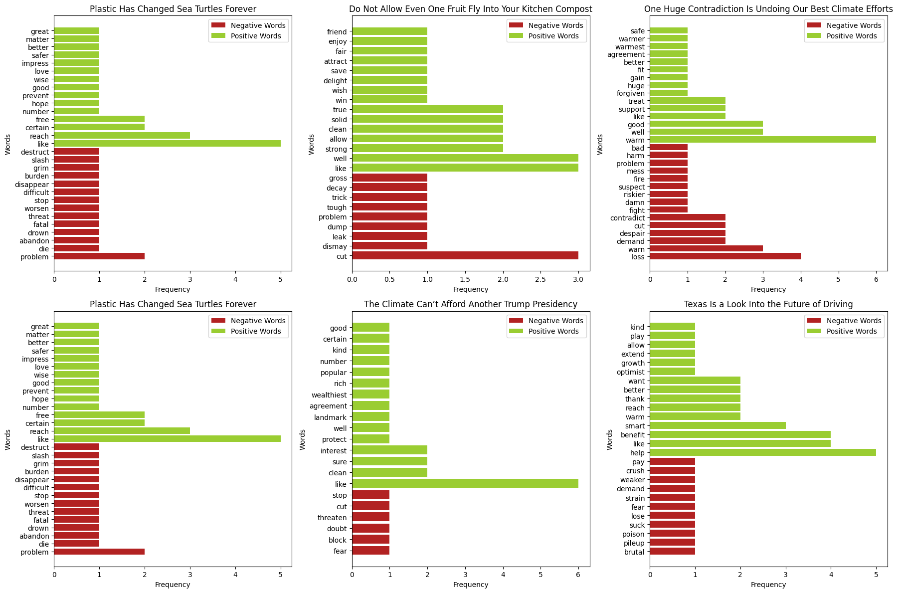

import requests
from bs4 import BeautifulSoupAnalyzing Climate Talk
DH140 Final Project by Justine Lim
July 2024
In the complex fight against climate change, effective communication is key. Understanding how different rhetoric is used to shape public perception and inspire action can make all the difference. I want to find which types of language are most indicative of propaganda versus scientifically backed information to gauge their influence on public understanding of climate change.
From understanding the ways propaganda and scientifically backed works communicate their messages, we can learn how to better inform and engage the public. Analyzing the language used in these different types of rhetoric will help us understand the divides that influence how climate change is perceived and acted upon. My research intends to break these divisions and instead promote a more informed and unified approach to understanding environmental issues.
By not only addressing an urgent global challenge but also using the power of digital humanities to find the intricate ways in which language shapes our world, my study aims to contribute to more effective climate communication strategies for greater public awareness and action.
My Research Question:
In what ways have rhetorical strategies been used in written works about climate change, and what can exploratory data analysis of sentimental language reveal about the presence of propaganda versus scientifically backed information in reputable publications?
All my data will be compiled from the online Climate section of The Atlantic, because after testing many reputable publications, I found that it has fewer restrictions on web scraping. I will use Python packages specializing in web scraping, such as Beautiful Soup and Requests, to parse HTML documents and extract links to various articles. Once I have access to these articles, I will use Pandas to organize the data into an analyzable format. For text processing, I will utilize NLTK, and for creating visualizations, I will mainly use Matplotlib.
DATA COLLECTION:
The first step in our analysis was to set up the web scraping process. To retrieve data from the web, I imported two libraries, requests to retrieve the HTML code from The Atlantic’s Climate webpage and BeautifulSoup to parse the HTML and find links to various articles on the page.
response = requests.get('https://www.theatlantic.com/category/climate/')
html_string = response.text
doc = BeautifulSoup(html_string, 'html.parser')
article_list = []
for li in doc.select('ul li a'):
href = li.get('href')
if href and '/archive' in href:
article_list.append(href)
for a in doc.find_all('a', href=True):
href = a['href']
if '/archive' in href:
article_list.append(href)By searching for all occurrences of anchor tags within lists and also all anchor tags on the page, I created a variable article_list that contains a list of links to the latest Atlantic articles on climate. To avoid irrelevant links to images and other navigation, I filtered specifically for links that contain /archive in their href attribute.
def getArticleDetails(article):
response = requests.get(article)
doc = BeautifulSoup(response.text, 'html.parser')
title = doc.find('h1')
article_title = title.get_text()
article_body = doc.find_all(class_='ArticleParagraph_root__4mszW')
article_text = ''
for paragraph in article_body:
article_text += paragraph.get_text() + '\n'
return article_title, article_textI have defined a function getArticleDetails to open a particular url and return its title and paragraph text in a string form without unnecessary headers or links.
import random
sampled_articles = random.sample(article_list, 6)Because The Atlantic has an abundance of written works, I imported Python’s random module to take a random sample of 6 article URLs from the list to control my data analysis.
import pandas as pd
articleDF = pd.DataFrame(columns=['url', 'text'])
df_list = []
for article_url in sampled_articles:
if article_url.startswith('/'):
article_url = 'https://www.theatlantic.com' + article_url
article_title, article_text = getArticleDetails(article_url)
word_count = len(article_text.split())
df_list.append(pd.DataFrame({'url': [article_url], 'title': [article_title], 'text': [article_text], 'word_count': [word_count]}))
articleDF = pd.concat(df_list, ignore_index=True)I have now imported the pandas library to set up for data manipulation and analysis. I then set up a for-loop that retrieved the title and text using the getArticleDetails function defined earlier. I also used the len() tool to calculate each article’s word count. To organize all the data and prevent overwriting variables with each iteration, I created a list to store individual data frames for each article’s article_url, article_title, article_text, and word_count. After collecting all the data frames, I concatenated them into a single data frame to store the information for all articles in the sample.
TEXT PROCESSING:
import matplotlib.pyplot as plt
import nltk
from nltk.tokenize import word_tokenize
from nltk.sentiment import vader
from nltk.corpus import stopwords
from nltk.corpus import opinion_lexicon
from nltk.stem.porter import PorterStemmer
nltk.download('punkt')
nltk.download('stopwords')
nltk.download('vader_lexicon')
nltk.download('opinion_lexicon')[nltk_data] Downloading package punkt to /home/jovyan/nltk_data...
[nltk_data] Package punkt is already up-to-date!
[nltk_data] Downloading package stopwords to /home/jovyan/nltk_data...
[nltk_data] Package stopwords is already up-to-date!
[nltk_data] Downloading package vader_lexicon to
[nltk_data] /home/jovyan/nltk_data...
[nltk_data] Package vader_lexicon is already up-to-date!
[nltk_data] Downloading package opinion_lexicon to
[nltk_data] /home/jovyan/nltk_data...
[nltk_data] Package opinion_lexicon is already up-to-date!TrueTo begin the data analysis portion of my final project, I have imported Matplotlib for visualizations and the Natural Language Toolkit (NLTK) with its various modules to help with starting a more focused analysis.
stop_words = (stopwords.words('english'))
senti = vader.SentimentIntensityAnalyzer()
def processText(text):
tokenized_text = word_tokenize(text)
noStop_text = [word for word in tokenized_text if word.lower() not in stop_words]
stemmed_text = [PorterStemmer().stem(word) for word in noStop_text]
return stemmed_text
articleDF['processed'] = articleDF['text'].apply(processText)Above, I began by creating two variables to help me with syntax in using NLTK modules. I then defined a function to process the raw text from The Atlantic articles by tokenizing the string, removing stop words, and words with the same stem.
ANALYSIS + VISUALIZATION:
# compares total frequency of positive and negative words
def PosNeg(text):
pos_count = 0
neg_count = 0
for word in text:
score = senti.polarity_scores(word)
if score['compound'] > 0:
pos_count += 1
elif score['compound'] < 0:
neg_count += 1
return pos_count, neg_countfig, axis = plt.subplots(2, 3, figsize=(18, 12)) # fits all plots in one page
axis = axis.flatten()
for i in range(len(articleDF)): # for each row/article in articleDF
row = articleDF.iloc[i]
pos_count, neg_count = PosNeg(row['processed'])
axis[i].bar('Positive Words', pos_count, color='yellowgreen', label='Positive Words')
axis[i].bar('Negative Words', neg_count, color='firebrick', label='Negative Words')
axis[i].set_title(row['title'])
axis[i].set_xlabel('Word Type')
axis[i].set_ylabel('Frequency')
axis[i].legend()
plt.tight_layout() # no axis overlapThe PosNeg() function takes in a given text and calculates the total number of positive and negative words by using the VADER sentiment analyzer to score each word, incrementing variables pos_count for positive scores and neg_count for negative scores. The function returns the counts of positive and negative words, visualizing information into the general sentiment of the text.
# compares 15 most common positive and negative words
def PosNegFreq(text):
pos_words = []
neg_words = []
for word in text:
score = senti.polarity_scores(word)
if score['compound'] > 0:
pos_words.append(word)
elif score['compound'] < 0:
neg_words.append(word)
pos_common = nltk.FreqDist(pos_words).most_common(15)
neg_common = nltk.FreqDist(neg_words).most_common(15)
pos = []
pos_freq = []
for i in pos_common:
pos.append(i[0])
pos_freq.append(i[1])
neg = []
neg_freq = []
for i in neg_common:
neg.append(i[0])
neg_freq.append(i[1])
return pos, pos_freq, neg, neg_freqfig, axis = plt.subplots(2, 3, figsize=(18, 12)) # fits all plots in one page
axis = axis.flatten()
for i in range(len(articleDF)): # for each row/article in articleDF
row = articleDF.iloc[i]
pos, pos_freq, neg, neg_freq = PosNegFreq(row['processed'])
axis[i].barh(neg, neg_freq, color='firebrick', label='Negative Words')
axis[i].barh(pos, pos_freq, color='yellowgreen', label='Positive Words')
axis[i].set_title(row['title'])
axis[i].set_xlabel('Frequency')
axis[i].set_ylabel('Words')
axis[i].legend()
plt.tight_layout() # no axis overlap
The PosNegFreq() function identifies the 15 most common positive and negative words in a given text. It classifies words based on their sentiment scores using the VADER analyzer, and then calculates their frequencies, returning four lists: the most common positive words, their frequencies, the most common negative words, and their frequencies.
def RankByNeg(text):
neg_score = []
for index, row in text.iterrows():
pos_count, neg_count = PosNeg(row['processed'])
neg_score.append((row['title'], neg_count))
for i in range(len(neg_score)):
for j in range(i + 1, len(neg_score)):
if neg_score[i][1] < neg_score[j][1]:
neg_score[i], neg_score[j] = neg_score[j], neg_score[i]
return neg_scoreneg_scores = RankByNeg(articleDF)
titles = [item[0] for item in neg_scores]
scores = [item[1] for item in neg_scores]
plt.barh(titles, scores, color='firebrick')
plt.xlabel('Negativity Score')
plt.ylabel('Article Title')
plt.title('Negative Word Count by Article')Text(0.5, 1.0, 'Negative Word Count by Article')The RankByNeg() function calculates negativity scores (total number of negative words) for each article using the previous PosNeg() function and sorts the list of scores in order.
def RankByPos(text):
pos_score = []
for index, row in text.iterrows():
pos_count, neg_count = PosNeg(row['processed'])
pos_score.append((row['title'], pos_count))
for i in range(len(pos_score)):
for j in range(i + 1, len(pos_score)):
if pos_score[i][1] < pos_score[j][1]:
pos_score[i], pos_score[j] = pos_score[j], pos_score[i]
return pos_scorepos_scores = RankByPos(articleDF)
titles = [item[0] for item in pos_scores]
scores = [item[1] for item in pos_scores]
plt.barh(titles, scores, color='yellowgreen')
plt.xlabel('Positivity Score')
plt.ylabel('Article Title')
plt.title('Positive Word Count by Article')Text(0.5, 1.0, 'Positive Word Count by Article')The RankByPos() function calculates positivity scores (total number of positive words) for each article using the previous PosNeg() function and sorts the list of scores in order.
RESULTS:
My preliminary analysis has given me valuable information on how rhetorical strategies are used in written works about climate change. By examining the frequency and sentiment of specific word choices, I have began to uncover patterns that reveal how language is used to frame climate change issues in various articles.
The visualizations generated from the data reveal a sharp divide in language use between articles that focus on raising awareness about climate change and those proposing solutions. The article We’re in an Age of Fire exhibits a higher frequency of negative language, with terms such as “fire” and “problem” predominating. This suggests that these articles are more likely to emphasize the urgency and severity of climate change, potentially to provoke concern and action.
On the other hand, articles that propose solutions or discuss positive developments, such as A Radical Idea to Break the Logic of Oil Drilling, tend to use more positive language. Words like “warm” and “better”, with higher positive scores, are more frequently used, showing a focus on hopeful narratives and potential advancements. This difference in language use is an example of a rhetorical strategy where negative language is used to show the critical nature of the problem, while positive language is used to convey optimism and the possibility for progress.
In regards to my research focus, propaganda typically relies on emotionally charged negative language, while scientific information balance both positive and negative language. With a more robust analysis involving multiple sources and a larger dataset, I could fully answer my research question and differentiate between the two.
CONCLUSION:
This research shows the important role of how we talk about climate change. The words and phrases used in climate change articles can strongly influence how people understand and respond to the issue. When the language used shows urgency and the seriousness of the problem, it can encourage people to take action and better understand the crisis. However, if the language downplays the severity or misrepresents the facts, it can slow down efforts to address climate change. Thus, the way climate change is talked about in public can either help or hinder the efforts to deal with this global problem.
Our findings provide useful information for creating better ways to communicate about climate change, guiding media practices, and supporting efforts to encourage more action and possible policy changes.